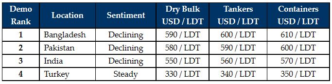

inWeekly Demolition Reports10/01/2022

2022 begins with Omicron sweeping across the world, as global markets come increasingly under pressure and in a state of stasis (with this most recent surge). Moreover, Recyclers remain unsure as whether to push on or retreat further from the declines seen over the last month.
Supply does remain stifled, but there is the growing feeling that Recyclers are not showing their true hand and as such, are likely lowballing offers in the hopes of acquiring a bargain or two (especially in Chattogram).
While on the one side, Bangladeshi steel plate prices have started to claw their way back and even remained steady for a couple of weeks now, on the other, the currency is stabilizing in Pakistan and Turkey (to an extent) and now that the festivities and holiday period is over, demand appears to be gradually firming back across the sub-continent markets.
Stability even prevailed in Turkey this week, with no noteworthy movements in steel being reported, while the Lira found a second week of stability in the mid-to-high TRY 13s. Additionally, with the marginal degree of vessel offerings still being unchanged, demand continues to persist from this market.
As such, most Recyclers across the board remain keen to fill their plots, even though there is not enough tonnage going around and it seems unlikely to be a busy 2022 (as compared to last year), with Containers and Dry Bulk still flying and a feeling that the beleaguered Tanker sector may also turn at some point this year.
Much may also depend on the severity of this recent Omicron wave and whether the surge in cases begins to restrict trade and movement – as we are currently seeing in parts of Asia where ‘as is’ take overs are at risk, international travel restrictions seem imminent, and infection rates skyrocket once again.
In keeping with the feeble optimism with the turn of the year and as fundamentals overall remain positive, most in the industry are looking forward to another lift off (soon enough)!
For week 1 of 2022, GMS demo rankings / pricing for the week are as below.

To read the remainder of the GMS WEEKLY, please visithttps://www.gmsinc.net/gms_new/index.php/view-gms-weekly?code=b1b66211faee581fc3bf2241e0834301
Source: GMS,Inc. (https://www.gmsinc.net/gms_new/index.php/web)